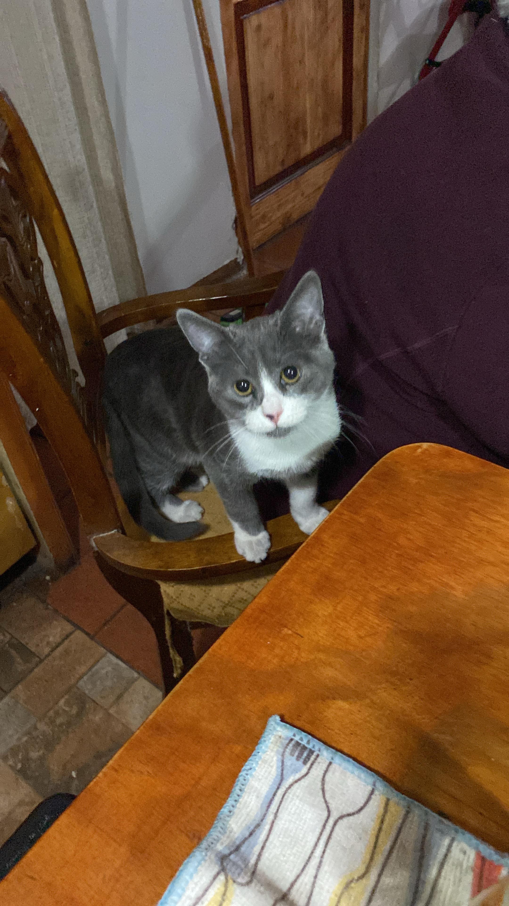

PARA TODOS LOS GATITOS QUE MIRAN DESDE EL CIELO

Plomo y blanco, tierno y jugueton, querido gatito, siempre estaras dentro de mi corazon ❤️
El mejor amigo de mi propia experiencia, un dia saliste y no llegaste mas;
Los amigos que encuentres en el camino, te diran que te extraño, ojala regreses,
Anniz